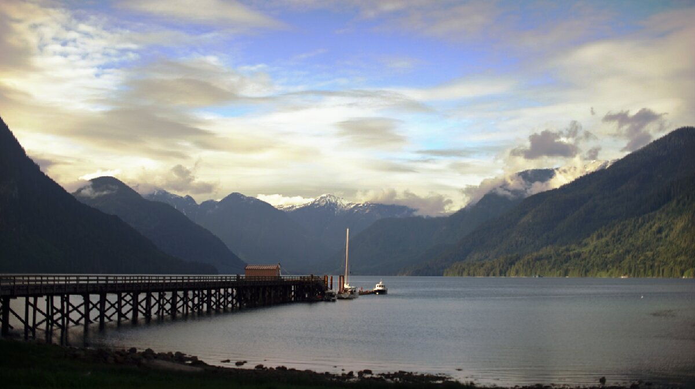

shoal bay
Note. What we refer to on this page as Shoal Bay, is on the traditional, stolen, unceded, overlapping and/or shared territory land of the Homalco, K’ómoks, Wei Wai Kum First Nations; the We Wai Kai First Nations, and the Kwakwaka’wakw(Kwakiutl) Band Council.
After transiting Yuculta and Dent rapids, we passed Nodales Channel and ducked into Shoal Bay on East Thurlow Island to find a spot on the government dock. To our surprise, there were 2 cruising boats there (although they left a few hours after we came in). At least, there was enough room for us.
Shoal Bay faces Phillip Arm, if anchoring it is possible for outflow winds to turn this bay into a lee shore(why we opted to dock). Another option was Bickley Bay, but it too suffers the same problem, winds can funnel in at night and reports we read said that holding there was not fantastic. We didn't have outflow winds here, though.
The Shoal Bay government dock is operated by cottage owners, who own the most amazing property we've ever seen on this coast. A lush, grassy shore, with wooden cottages, a covered terrace with an outdoor oven, a workshop and many other buildings. Moorage is 1.50$/foot, reasonable enough, although there is no power or water on the dock. There is an outhouse ashore, and supposedly showers/laundry and WiFi but we didn't need either so we didn't ask. We found a bit of internet while crossing Nodales Channel, so we were able to check weather and send emails then.
The forecast was still 25-35 knots out of the NW in Johnstone Strait that day, we felt some gusts while in Shoal Bay, but not for long. The back channels are very shielded from the wind and chaos of the Strait. Wind can reach upper channels, especially if it's roaring out there, and especially if you're transiting in the shoulder season like we are. It rained a bit in the afternoon, enough that it helped rinse some of the salt from out boat, leftover from our bashing into weather when going up Malaspina Strait. Fresh water is a precious commodity here, we can't wash out boat with it, it is better to wait for rain.